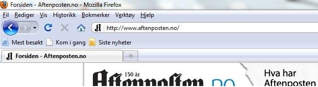
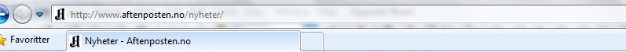

Hva er internett?
Internett er ett globalt nettverk bestående av mange sammenkoblede maskiner med flere hundre millioner brukere!
Vi kan se på Internett som en stor motorvei med flere filer i begge retninger, bilene er informasjon som sendes mellom datamaskiner. Informasjonen kan sendes begge veier og vi kan bytte fil eller finne en annen vei å kjøre for å nå målet (dette skjer automatisk).
Internett er et nettverk av nettverk, fra ditt eget nettverk der du sitter på din maskin er du koblet opp til et annet som er koblet til et annet osv. Disse nettverkene overlapper hverandre, viss ett nettverk skulle bli slått ut går man bare igjennom et annet for å få levert informasjonen, dermed sikrer man at man alltid kommer frem.
Oversetter jeg dette til metaforen over blir det som å bytte motorvei fordi den ene er under reparasjon, det har ingen betydning vi har tusenvis av motorveier å velge mellom.
Når du åpner nettleseren din og går inn på en nettside (feks www.aftenposten.no) er dette laget av en annen Internett bruker, dette kan ses på som en tjeneste til deg så du kan gå inn å få tak i informasjonen du er på jakt etter.
Internett består av millioner av slike nettsider og kan sammenlignes med et massivt dugnad arbeid.
En av de viktigste forutsettingene for Internett er at man deler informasjon med andre, med Internett har dette blitt mer effektivt enn med noe annet medium!
For å få opp siden du er ute etter må du skrive adressen i adressefeltet i nettleseren (se bilde) Viss du ikke kan noen adresser eller ikke helt vet hvilken adresse du finner informasjonen du er ute etter bruker du en søkemotor.

En nettside kan ha en eller flere undersider, (feks www.aftenposten.no/nyheter/) dette er fortsatt på samme nettsted bare at vi har gått inn på noe spesifikt på siden, navnet på undersiden følger etter skråstreken.

Som du sikkert har skjønt er Internett en enorm informasjons og kommunikasjons kilde og har mange muligheter, viss du vill ha eksempler på hva man kan gjøre på Internett ta en titt på linker.
For å lære mer gå inn på http://no.wikipedia.org/wiki/Internett